Binary Numbers
Two Symbols, How Far Can They Go?
Last class, we built our own number system out of circles and squares.
What are some things we can communicate with only two symbols? Is there a limit?
Today, We Explore Binary Numbers
Every computer you have ever used, from a phone to a supercomputer, stores and moves information using only two symbols. Today we find out just how far two symbols can go.
Head to Your Tables
Get back into your pairs from last class. You will need the patterns you built together.
One Place, Two Patterns
With only one spot to fill, a circle-and-square system can make just two different patterns.
Two Places, Four Patterns
Add a second place, and the number of possible patterns doubles.
Three Places, Eight Patterns
Add a third place, and it doubles again.
We Can Number Each Pattern
Line the patterns up in order, and give each one a number.
Note: computer scientists like to start counting at 0, not 1.
Instead of two shapes, what if we had ten?
One Place, Ten Patterns
With ten different shapes to choose from, one place can show ten different patterns: 0 through 9.
These are still just shapes. We only use the marks 0-9 because they are familiar.
Two Places, One Hundred Patterns
Add a second place, and those ten shapes combine into one hundred different patterns.
What Comes Next?
Grab a whiteboard.
Write down what comes next.
What Comes Next?
When every place runs out of digits at the same time, a brand-new place appears.
Where is all of this heading?
Binary
"Binary" Is Just a System With Two Shapes
Computer scientists call each digit a bit, short for binary digit.
Making Organized Lists Is Counting in Binary
The same eight patterns from before, numbered 0 through 7, are really just the binary numbers 000 through 111.
How Does Counting in Binary Work?
It works the same way as counting in decimal, just with fewer digits to worry about. Both start at 0. Count up through all your digits, and when you run out in the rightmost column, start that column back at 0 and count up in the next column over. Repeat that pattern for every column.
| Decimal | Binary |
|---|---|
| 0 | 0 |
| 9 | 1 |
| 10 | 10 |
| … | … |
| 19 | 11 |
| 20 | 100 |
| 21 | 101 |
What Comes Next?
| Decimal | Binary |
|---|---|
| 13 | 1101 |
| 14 | 1110 |
How can we figure out the binary representation of a number?
Making a Flippy-Do!
The Flippy-Do is a tool that will help you convert between decimal and binary by hand.
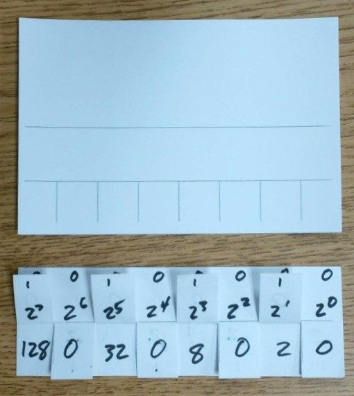
Making a Flippy-Do!
Get a 3"×5" index card. Write your name in the big section on top.
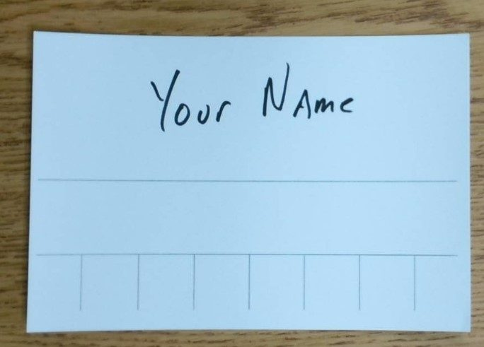
Making a Flippy-Do!
Fold the section with your name on it backwards, along the line.
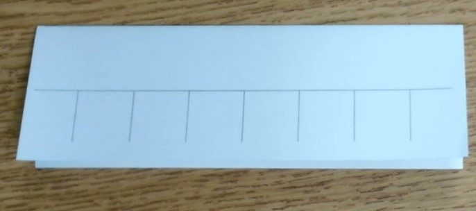
Making a Flippy-Do!
Fold the front flap up along the horizontal line.
Making a Flippy-Do!
Fold that flap back down. Cut the top flap along the vertical lines, stopping at the fold you just made.
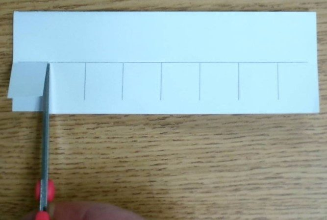
Making a Flippy-Do!
You will now have 8 small flaps.
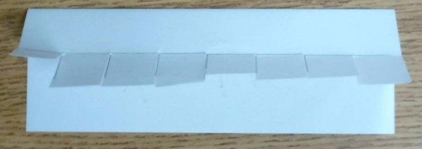
Making a Flippy-Do!
Unfold the card. It now has 3 sections: the top section with 8 flaps, a smaller middle strip, and a large bottom section. Spread glue along the middle strip and fold it closed again. This gives you a half-sized card with flaps along the bottom on the front, and your name on the back.
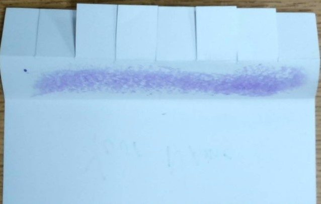
Making a Flippy-Do!
Write a 0 in each of the flaps.
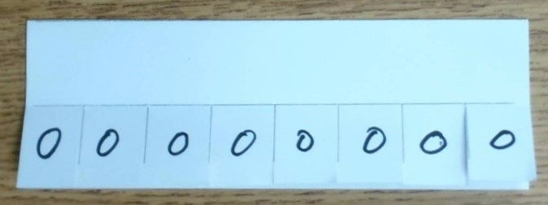
Making a Flippy-Do!
Along the top edge, directly above each of the 0s you just wrote, write another small 0.
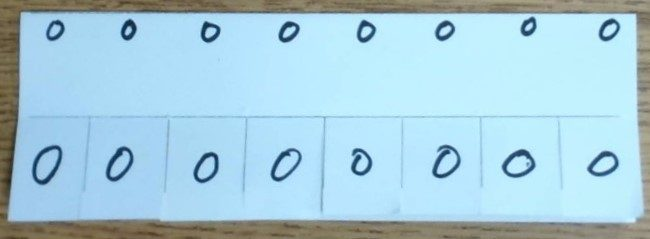
Making a Flippy-Do!
Below the top row of 0s and above the flaps, write out the series of exponents of 2, starting with 20 on the right and ending with 27 on the left.
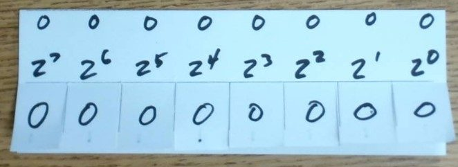
Making a Flippy-Do!
Flip up the flaps. Along the top of each one, write a 1, the same size as the small 0s from Step 7.
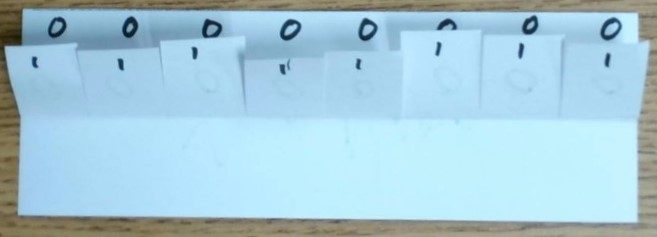
Making a Flippy-Do!
Below the 1, write out the series of exponents again, starting with 20 on the right and ending with 27 on the left.
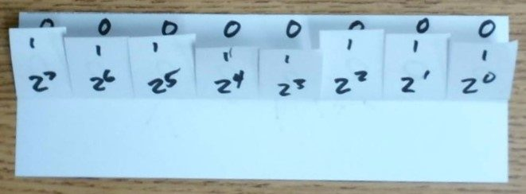
Making a Flippy-Do!
In the space below the flaps, write out the value of each exponent, with 1 on the right, ending with 128 on the left.
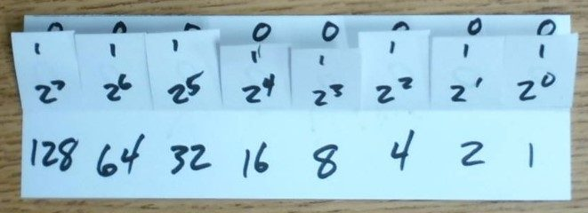
Making a Flippy-Do!
You now have a working Flippy-Do. Create a binary number along the top, and add up the numbers on the bottom to find its decimal value.
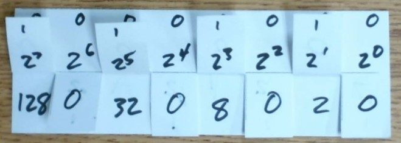
Making a Flippy-Do!
Step 14. There is no step 14. Congratulations, you now have a working Flippy-Do!

Eight Bits Make a Byte
Each column represents one place in a binary number, called a bit (short for binary digit). Each bit can be a 0 or a 1. Your Flippy-Do has 8 columns, 8 bits, which together make one byte.
Reading a Binary Number
Make the top row of your Flippy-Do look like the binary number 0001 0010.
To make long binary numbers easier to read, we split the digits into groups of four, the same way commas split decimal digits into groups of three, like in 1,453,334.
16 + 2 = 18
Converting Decimal to Binary
To go the other way, use your Flippy-Do to work through your number one place at a time.
- Flip every bit up.
- Flip down any place value bigger than your number.
- Subtract the biggest value left from your number.
- Move to the next column and repeat.
- Stop when you hit 0, and flip any remaining flaps to the right back down.
Converting 5 to Binary
We start with the number 5 and step through each place value, from left to right.
Is 128 bigger than 5? Yes, flip it down.
Is 64 bigger than 5? Yes, flip it down.
Is 32 bigger than 5? Yes, flip it down.
Is 16 bigger than 5? Yes, flip it down.
Is 8 bigger than 5? Yes, flip it down.
Is 4 bigger than 5? No, keep it. 5 − 4 = 1. Keep going, but now with 1 instead of 5.
Is 2 bigger than 1? Yes, flip it down.
Is 1 bigger than 1? No, keep it. 1 − 1 = 0. We hit 0, so we stop, flipping any flaps to the right back down. (There are no flaps to the right in this case.)
5 = 0000 0101, or just 101
What's the Decimal Value?
Here's a binary number: 0001 1010
Before we work it out: what do you predict this equals in decimal? Talk with your partner, then write your guess on your whiteboard.
16 + 8 + 2 = 26
What's the Binary Value?
Let's convert the number 36 to binary, an even number this time.
Before we work it out: what do you predict this looks like in binary? Talk with your partner, then write your guess on your whiteboard.
Is 128 bigger than 36? Yes, flip it down.
Is 64 bigger than 36? Yes, flip it down.
Is 32 bigger than 36? No, keep it. 36 − 32 = 4. Keep going, but now with 4 instead of 36.
Is 16 bigger than 4? Yes, flip it down.
Is 8 bigger than 4? Yes, flip it down.
Is 4 bigger than 4? No, keep it. 4 − 4 = 0. We hit 0 with two columns still to go, so we flip the 2 and 1 flaps down together, without even checking them.
36 = 0010 0100
Two Ways to Write the Same Number
Decimal Number: a base 10 number with 10 possible digits, 0 through 9.
| 101 | 100 |
| 10 | 1 |
| 2 | 3 |
Binary Number: a base 2 number with 2 possible digits, 0 and 1.
| 24 | 23 | 22 | 21 | 20 |
| 16 | 8 | 4 | 2 | 1 |
| 1 | 0 | 1 | 1 | 1 |
23 in decimal is 10111 in binary.
Both forms represent the same value.
We just have two different ways to write it.
Complete the Activity Guide
Work with your partner and your Flippy-Do to complete the 1.4 Activity Guide.
When you're finished, press ↓ to try and stop the Binary Breach.
Binary Breach
Put your new skills to the test. Restore the systems by converting between binary and decimal, just like you did with your Flippy-Do.